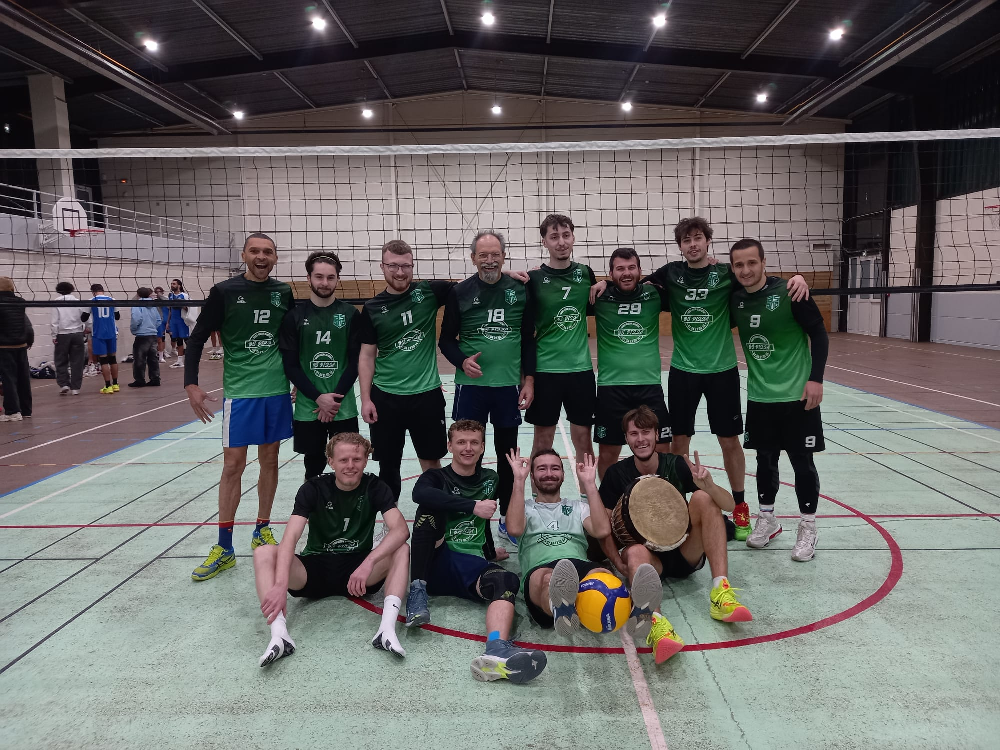

14 ans de Scoutisme : L'École de la Responsabilité
Certains disent que le scoutisme est une véritable école de vie, et Victor Blanche en dit exactement la même chose. Tombé dans ce mouvement citoyen dès son plus jeune âge chez les louveteaux, il y apprend très tôt la débrouillardise individuelle, l'autonomie et le respect du collectif au cœur de la nature.
À l'adolescence, son passage chez les pionniers marque une étape décisive de responsabilisation. C'est à cet âge de transition qu'il apprend à réfléchir par lui-même, à concevoir des projets de groupe en autonomie et à agir concrètement face aux imprévus du terrain.
Cette aventure humaine s'est concrétisée par de nombreux projets de rénovation et des missions à fort impact humanitaire. Très vite, Victor a élargi son action à l'échelle du territoire : profitant de l'expérience de son père, alors directeur logistique du territoire, il a activement collaboré à l'organisation et aux coulisses matérielles de grands rassemblements comme le Frat, le Marathon de Paris ou des sessions de formation au niveau territorial.
Devenu chef d'équipe dans le Val-d'Oise, il a transformé cette école du terrain en une solide force collective. Gestion de budgets, coordination d'équipes de jeunes bénévoles et planification logistique de camps en pleine nature : cet engagement de 14 ans est avant tout le socle de ses valeurs d'entraide, de son empathie et de son sens des responsabilités.

Une véritable école de vie : 14 ans d'engagement chez les Scouts, socle de ses valeurs d'entraide et de son sens des responsabilités.
L'Héritage Familial & Parcours Multisport
Chez les Blanche, le sport ne se pratique pas seulement : il se transmet de génération en génération. Immergé dès l'enfance dans une culture de l'effort et du dépassement, Victor grandit entre un père ayant évolué au niveau national en Volleyball et une mère joueuse de tennis passionnée. C'est tout naturellement sur les courts de tennis qu'il tape ses premières balles.

L'héritage de la terre battue : bercé très jeune par la passion familiale pour le tennis, Victor décrypte aujourd'hui chaque échange avec la précision d'un analyste (ici, les tribunes de Roland-Garros).
Désireux d'emboîter le pas à son grand frère, il bifurque ensuite vers les tatamis de Judo. Durant plusieurs années d'une pratique intense et rigoureuse, il décroche sa ceinture marron et se frotte au niveau exigeant des compétitions régionales, y forgeant son mental de compétiteur individuel et son respect absolu de l'adversaire.
La Rigueur de l'Arbitrage : Cap sur les Championnats de France UNSS
Au collège, Victor explore de nouveaux horizons avec le Tennis de Table, combinant l'AS et le club. Cette double implication le mène aux Championnats de France UNSS, où il décroche sa certification d'arbitre national UNSS. Une responsabilité précoce pour faire respecter le règlement et prendre des décisions rapides sous la pression du jeu.
Le volley-ball s'impose ensuite comme une évidence. Victor commence par l'AS volley de son lycée, partageant cette passion sur le terrain avec son père. Il prolonge cette dynamique collective en rejoignant le club de Saint-Ouen-l'Aumône où il évolue encore aujourd'hui au niveau départemental.

Le collectif à l'œuvre : Victor (numéro 33, debout, deuxième en partant de la droite) et ses coéquipiers du club de volley-ball de Saint-Ouen-l'Aumône.
Quand il ne joue pas, Victor décrypte le sport de haut niveau avec la précision d'un analyste. Grand suiveur du circuit ATP de tennis, il est également un passionné de basketball, scrutant la NBA avec une attention particulière pour la franchise des San Antonio Spurs. Le rugby fait également partie de son patrimoine familial avec le Stade Français, complété par la dimension stratégique de la Formule 1.
L'Esport et l'Histoire : De la Stratégie Virtuelle aux Récits du Passé
Quand il s'éloigne des parquets physiques, Victor nourrit son sens tactique et son goût du challenge à travers l'univers du jeu vidéo et de l'esport. Cette passion du jeu virtuel s'accompagne d'une véritable curiosité intellectuelle pour les grands récits qui ont façonné l'Histoire.
Grand lecteur et amateur de cinéma, il oriente l'intégralité de ses livres et des films qu'il visionne au sein de deux thèmes de prédilection : la grandeur de l'Antiquité grecque et romaine avec sa mythologie fascinante, ainsi que la dimension stratégique et humaine des deux Guerres mondiales. Pour ce profil rigoureux, chaque œuvre est une opportunité d'analyser les mécanismes de prise de décision et d'en tirer des leçons universelles.